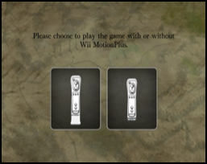

9 |
Menú |
 |
|
Misión  Selecciona MISSION en el menú principal para empezar a jugar.
El objetivo del juego es eliminar todos los enemigos fantasmas que te encuentres en el camino y derrotar a la Reina fantasma en el último nivel.
Selecciona MISSION en el menú principal para empezar a jugar.
El objetivo del juego es eliminar todos los enemigos fantasmas que te encuentres en el camino y derrotar a la Reina fantasma en el último nivel. Seleccionar datos de partida  En el menú DATA SELECT, selecciona una nueva ranura de datos para empezar una partida nueva o selecciona una ranura de datos existente para cargar una partida guardada.
Puedes guardar hasta cinco partidas.
En el menú DATA SELECT, selecciona una nueva ranura de datos para empezar una partida nueva o selecciona una ranura de datos existente para cargar una partida guardada.
Puedes guardar hasta cinco partidas. Seleccionar nivel  Empezarás a jugar en el primer nivel. Los niveles siguientes se irán desbloqueando cuando completes un nivel.
El siguiente nivel de dificultad se desbloqueará cuando hayas completado los ocho niveles con la dificultad actual.
Puedes seleccionar un nivel desbloqueado para jugar en el menú Seleccionar nivel.
Empezarás a jugar en el primer nivel. Los niveles siguientes se irán desbloqueando cuando completes un nivel.
El siguiente nivel de dificultad se desbloqueará cuando hayas completado los ocho niveles con la dificultad actual.
Puedes seleccionar un nivel desbloqueado para jugar en el menú Seleccionar nivel. Perfil del personaje En el menú CHARACTER PROFILE se muestra el estado de tu personaje. Selecciona el tipo de espada que quieres utilizar antes de empezar cada nivel. Los diferentes tipos de espadas utilizan el poder especial de forma diferente. Seleccionar modo de funcionamiento  Selecciona si quieres utilizar o no el Wii MotionPlus antes de empezar a jugar. Solo puedes seleccionar el modo de funcionamiento antes de empezar a jugar. Durante la partida, vuelve al menú principal y vuelve a entrar en la partida si quieres cambiar el modo de funcionamiento. Máxima puntuación Selecciona HIGHSCORE en el menú principal. Compara las puntuaciones máximas de diferentes jugadores. Configuración de sonido Selecciona SETTINGS en el menú principal. Este menú te permite configurar el nivel del volumen de la música de fondo y los efectos de sonido. |
 |
 |
 |